Puno es una ciudad del sureste del Perú, capital del departamento de Puno y provincia de Puno, está ubicada entre las coordenadas geográficas 15°50′15″S 70°01′18″O a 3810 msnm
Distancias
De Trujillo 1896 km
De Lima 1335 km
De Arequipa 325 km
De Cuzco 389 km
Puno es un lugar Mágico,y sin duda el lago Titicaca es una verdadera maravilla
Y sin lugar a dudas uno de los destinos más atractivos del Perú y uno de los más interesantes en el continente: pocas ciudades tienen el privilegio de ubicarse a orillas de una maravilla de la naturaleza como el Lago Titicaca, el lago navegable más alto del mundo a más de 3800 msnm.
Puno es considerada como la Capital Folklórica del Perú y de América, Puno es inmensamente rica en danzas, música, costumbres y leyendas, sus danzas superan las 350. Puno es célebre por lo variado y colorido de su folklore, sin duda el más rico y deslumbrante del continente, cuya máxima expresión es la Fiesta de la Virgen de la Candelaria, que se realiza en febrero.
Las islas flotantes de los uros se encuentran al oeste del lago Titicaca, y al noreste de Puno, entre los paralelos 15° 50' de longitud oeste del meridiano de Greenwich, a una altitud de aproximadamente 3810 metros, a 7 km de la ciudad de Puno.

La leyenda urbana asumía que las islas de los Uros flotaban mágicamente por bendición de los dioses, sin embrago se conoce que las islas flotan, son construidas sobre bloques de raíces de las totoras, las que al entrar en descomposición producen gases, que al quedar atrapados en la maraña de raices ayudan a la flotación.
Por encima de estos bloques de raíces, colocan sucesivas camadas de totora seca, sobra la cual construyes sus habitaciones con el mismo material.
Se cree que los UROS fueron uno de los mas antiguos grupos étnicos que poblaron la región del altiplano andino. Su sobrevivencia dependía de sus habilidades como pescadores y cazadores de aves. Este grupo prefería mantenerse aislado de las civilizaciones en tierra firme.

La isla de Taquile (Intika en quechua), en el lago Titicaca, pertenece al distrito de Amantaní, Puno, Perú y está situada a 45 km de la capital regional. Cuenta con una población aproximada de 2.200 habitantes. La villa principal se encuentra a 3.950 msnm y el punto más alto de la isla llega a los 4.050 msnm.
Los pobladores de la Isla de Taquile en el Lago Titicaca son de origen quechua y se caracterizan por el arraigo de sus tradiciones, costumbres y coloridas vestimentas. Se dedican a la pesca, la agricultura y a la producción de textiles.
Taquile y su Arte Textil fueron honrados al ser declarado Patrimonio Cultural Inmaterial de la Humanidad por la UNESCO
Dos hechos curiosos son :
primero > que dentro de la isla no habita ningún perro.
segundo > que por la vestimenta puedes diferenciar a un hombre soltero y casado
La isla de Amantani Se encuentra en el departamento de Puno, y forma parte de las 36 islas del lago Titicaca. Para acceder se debe partir de la ciudad de Puno y navegar entre 3 ó 4 horas hasta la Península de Capachica, la entrada a la Isla. El recorrido es de 40 kilómetros.
Sus habitantes se dedican a la agricultura y la artesanía, entre cuyos objetos destacan sus textiles y tallados en piedra.


Esta isla cuenta con miradores naturales y algunos vestigios arqueológicos: Pacha Tata y Pacha Mama, dejados por la cultura Tiahuanaco, como centros ceremoniales y un cementerio de momias. La isla cuenta con dos miradores naturales y sitios arqueológicos como, de origen Tiahuanaco.
Su principal medio de subsistencia es la actividad agrícola; producen papas, ocas, cebada y habas; en la actividad pecuaria sobresalesn los bovinos y vacunos. Su actividad textil es semejante a la de Taquile, tanto en variedad como en diseño.
Debido a la existencia de roca granítica en el cerro Llacastiti se ha desarrollado una actividad de corte y tallado de utensillos para el uso cotidiano y para elementos decorativos en la construcción.
El distrito de Capachica se encuentra localizada en la Región Puno, provincia de Puno, Departamento de Puno a una altitud de 3,880 m.s.n.m. Se ubica a 62 kilómetros al nor-oeste de la ciudad de Puno.
Distancias:
| Localidad | Distancia(km) | Tiempo aproximado (hora) |
| Puno- Capachica | 62 | 1:20 |
| Puno - Chifrón | 66.5 | 1.25 |
| Puno – Ccotos | 69 | 1:35 |

Capachica está conformado por 16 comunidades:
Llachón, Yapura, Lago Azul, Toctoro
Ccollpa, Miraflores, Capano, Ccotos,
Siale, Chillora, Isañura, Escallani,
Hilata, San Cristóbal, Yancaco y Capachica
Población : tiene aproximadamente 12 mil habitantes. Cuenta con una extensión aproximada de 117.06 km².
Capachica quiere decir en leguaje nativo biodiversidad de flora y fauna que abundaba en toda la península, en especial las flores que en el vocablo quechua significa T´ika, y también en la toponimia quechua QHAPAQ vocablo que significa riqueza, abundancia, variedad, igual seria QHAPAQ T´IKA.
EL centro poblado de Llachón se encuentra ubicado a 75 Km (46.6 millas) de la ciudad de Puno, con el tiempo aproximado de 1 hora con 45 minutos por vía terrestre carretera asfaltada hasta Capachica y afirmada a Llachón y 2 horas por vía Lacustre. La comunidad quechua de Llachón agrupa a 1,330 comuneros pertenecientes a 280 familias.
Sus habitantes se dedican a la agricultura y la artesanía, entre cuyos objetos destacan sus textiles y tallados en piedra.

A través de la ventana de cualquier habitación es posible apreciar el espectacular paisaje lacustre y le recomendamos apreciarlo especialmente al amanecer y a la hora de la caída del sol. El paisaje natural se enriquece con la vista de las montañas llenas de andenes pre Incas y los bosquecillos de eucalipto que rodea la comunidad. Ese es el escenario donde habitan los comuneros y comuneras en donde cultivan, pescan, tejen y hacen las labores domésticas.
El paisaje natural se enriquece con la vista de las montañas llenas de andenes pre Incas y los bosquecillos de eucalipto que rodea la comunidad. Ese es el escenario donde habitan los comuneros y comuneras; allí cultivan, pescan, tejen y hacen las labores domésticas.


Chucuito es una pequeña localidad de la provincia de Puno, situada a unos 18 km de la ciudad de Puno al borde de la carretera Desaguadero y La Paz (Bolivia). Se sitúa a 3 875 msnm.1 La población es de 7 913 habitanteres2 Es una de las más hermosas de las localidades ubicadas a orillas del lago Titicaca por la posición geográfica y vistas que ofrece desde los Apus como el Auqui
En Chucuito se hallan el reloj solar que marca la hora según la sobra que cubre su parte inferior, el famoso templo de la fertilidad en donde se hallan sembradas diversas piedras a manera de órganos viriles y la piscicultura donde se crían truchas.
Chucuito tiene denominaciones como ciudad de las Cajas Reales, pues antiguamente tenía vetas de mercurio que permitían dar ley al oro y plata que venían de las minas de potosí. Era un lugar de paso, ahí el origen de las picotas de piedra que erróneamente y por presión del Turismo se concfunden con falos, pues en nuestro mundo andino no existen vestigios de culto al falo, más sí ritos y cultos a la PACHAMAMA que con el sincretismo religioso se expresan a través de la veneración a la Virgen María
El portal de Aramu Muru tiene la forma de un cuadrado de 7 metros de lado tallado en la roca. Hasta ahora no se ha realizado un serio estudio arqueológico que pueda revelar la fecha de cuando los primeros pobladores empezaron a considerar sagrado este lugar.
La Puerta de Hayu Marca se llama el umbral o la entrada de Aramu Muru
Según una profecía, la puerta se abrirá algún día y los dioses volverán en sus naves solares.
La leyenda cuenta que grandes héroes atravesaron la puerta para llevar una vida gloriosa de inmortalidad. Personas que pusieron sus manos sobre la puerta tuvieron visiones de estrellas, columnas de fuego y música extraña.
Una estructura enorme y misteriosa con apariencia de puerta se ha redescubierto en la región montañosa de Hayu Marca, del Perú meridional, cerca del lago Titicaca. Hayu Marca, a 35 kilómetros de la ciudad de Puno, se ha reverenciado desde hace mucho tiempo por los indios locales como "la Ciudad de los Dioses", y nunca se ha explorado completamente debido al terreno accidentado de la montaña.


Juli, capital de la provincia de Chucuito conocida como la “Roma de América”, se asienta en la orilla occidental del lago Titicaca a una altitud de 3.884 msnm y a 79 km de la ciudad de Puno,
Las precipitaciones pluviales se presentan en los meses de noviembre a marzo y son escasos durante los meses de abril a octubre. En los meses de mayo, junio y julio el frío es intenso por las noches con una temperatura de hasta - 6º bajo cero y de 19 ºC de día, tiene un clima seco y semiseco refrescado con la brisa suave del Titicaca.
Juli tiene una herencia cultural de 10,000 años de antiguedad. Sus testimonios son múltiples, desde el arte parietal hasta monumentos de piedra de las culturas Sillumocco, Tiwanaku, Lupaqa e Inca. Parte de esta herencia está representada por estelas, monolitos, murallas y Chullpas, como también los Templos de San Idelfonso hoy Santa Cruz de Jerusalén, Santa María la Mayor, hoy La Asunción de nuestra Señora, el Templo de San Juan Bautista conocida como San Juan de Letran, y la de Santo Tomás de Aquino conocida como San Pedro Mártir.

Pomata es una localidad del Altiplano peruano situado en la orilla suroeste del lago Titicaca a 104 km (2h 10min) de Puno. Conocida por el apelativo de Balcón Filosófico del Altiplano, es la capital del distrito de Pomata, uno de los siete que conforman la Provincia de Chucuito, ubicada en el Departamento de Puno al sur del Perú.
Pomata deriva de la frase aimara puma uta que significa la casa del puma, desmetaforizando la residencia del puma.1
En Pomata destaca la iglesia de Santiago Apóstol, de estilo mestizo, y la increíble vista panorámica del lago y de la península de Copacabana.
Playa de Chatuma, Aproximadamente 1 Km. de extensión, ubicada en una zona amplia y abrigada del extremo sur del Lago Titicaca, entre las ciudades de Yunguyo y Pomata.
Iglesia Santiago Apóstol, Construido en advocación a San Santiago, se venera a la Virgen del Rosario, su construcción data del siglo XVI concluido en 1567, de planta en cruz latina de una sola nave cubierta con bóveda de cañón, en el crucero la cúpula con tallas decoradas de piedra rojiza y de estilo mestizo.


Tiahuanaco o Tiwanaku es una antigua ciudad arqueológica capital del estado tiahuanacota ubicada en el Departamento de La Paz, Bolivia, a 15 km al sudeste del lago Titicaca.
Tiahuanaco fue el centro de la civilización tiahuanaco, una cultura preincaica que basaba su economía en la agricultura y la ganadería, y que abarcó los territorios de la meseta del Collao, entre el suroeste de Peru, el sureste de Bolivia
La cultura Tiahuanaco es denominada por los historiadores bolivianos como la "Cultura madre de Bolivia" (Mamam Yachaymuruy).
Actualmente se sabe que la ciudad y sus principales edificios se construyeron en diferentes fases aunque el orden en el que fueron construidas sus estructuras todavía no está clara. Todos los monumentos constructivos de la ciudad de Tiwanaku tienen una rigurosa planificación y tecnologías constructivas innovadoras para la época. Ésta ciudad se caracteriza por las plataformas, patios hundidos y pirámides escalonadas.
En la ciudad destacan la pirámide de Akapana, el Puma punku, Kalasasaya, templete semisubterraneo, Kori Kala y Putuni, aunque también tiene construcciones menores como Chunchukala, Laka Kollu y la Karana.


En una península de la laguna Umayo, a 33 km de la ciudad Puno, se encuentra el sitio arqueológico de Sillustani, un cementerio donde se pueden ver una serie de impresionantes tumbas pertenecientes a la cultura Kolla (1200 - 1450) que se desarrolló en la parte norte de la laguna, en la localidad conocida como Hatuncolla.
Las tumbas, llamados chullpas, que tienen la forma de troncos de cono invertidos, son construcciones que en menor número se encuentran también en varios otros locales del altiplano, como Acora o Ilave.
Antes de ser colocados en la chullpa, el cadáver era momificado en posición fetal. Conjuntamente con la momia se colocaban sus pertenencias, en algunos casos objetos de oro y plata, utensilios de cerámica y alimentos, puesto que las creencias decían que después de la muerte resucitarían en otra parte donde habrán de comer y beber a voluntad, como antes de morir.
Se observan diferentes tipos de entierros, desde los más rústicos, Pre-Incas, hasta los mausoleos más sofisticados, con piedras de muchos ángulos perfectamente encajados en la parte externa.


Lampa es una ciudad del Departamento de Puno, Perú. Conocida como "La Ciudad Rosada" o "Ciudad de las 7 Maravillas", está ubicada en el Departamento de Puno al sur de Perú, es capital de la Provincia de Lampa integrada al departamento de Puno. La Provincia de Lampa tiene 10 distritos: Lampa, Cabanilla, Calapuja, Nicasio, Ocuviri, Palca, Paratía, Pucará, Santa Lucía y Vila Vila.
Las tumbas, llamados chullpas, que tienen la forma de troncos de cono invertidos, son construcciones que en menor número se encuentran también en varios otros locales del altiplano, como Acora o Ilave.
La capilla de Santiago Apóstol es otro atractivo, ubica dentro del templo que lleva el mismo nombre. Del púlpito, se dice que es semejante al de San Blas de Cusco; mientras que la canopia de la Virgen Inmaculada también es considerada como una réplica del anda de plata de la Virgen de La Macarena en Sevilla, la cual fue obsequiada por el reconocido Enrique Torres Belón.
El Cristo de Cuero es una imagen excepcional de Jesucristo y se cree que solo hay dos de este material en el mundo, uno en Pamplona (España) y otro en Lampa.



.jpg)
Pucará es un distrito de la provincia de Lampa en el departamento peruano de Puno. En el año 2007 tenía una población de 6060 habitantes y una densidad poblacional de 11,3 personas por km². Abarca un área total de 537,6&bnsp;km².
Este lugar también fue el escenario donde se desarrolló la Cultura Pucará, caracterizándose por sus grandes construcciones piramidales, formando una gran ciudad prehispánica. Su civilización destacó por sus conocimientos arquitectónicos y de ingeniería hidráulica.
Pucará, la cual es reconocida por su cerámica. El símbolo más representativo de esta zona es el “Torito de Pucará”, los cuales son colgados en pareja encima de las entradas de las casas como símbolo de protección y prosperidad. Es por eso, que a Pucará también se le conoce como la “Tierra del Torito”.
Entre los atractivos que podrás visitar está el Museo Lítico, espacio en el que se pueden apreciar esculturas en piedra. También son imperdibles otros atractivos como el Complejo Arqueológico de Kalasaya, el Museo de Cerámica de Pucará y su sala de video donde se explica el lado mítico del Torito de Pucará y su uso social, la Iglesia Santa Isabel, la Plaza del Torito.
.jpg)


El Cañon de Tinajani se ubica en la provincia de Melgar en el distrito de Ayaviri a unos 160 km de puno, vía terrestre ruta Puno – Juliaca – Pucará – Ayaviri. Ubicado a 3,953 m.s.n.m, y sobre una extensión de 250 hectáreas se encuentran los amplios y vistosos parajes de Tinajani.
Tinajani es un cañón (también conocido como Cañón del Diablo) y bosque de piedras.
Las rocas, erosionadas hasta adquirir formas sugerentes, pueden alcanzar cincuenta o más metros de altura, y caminar entre ellas es toda una experiencia. Cada visitante ante ellas descubre formaciones distintas, proyecciones simbólicas y datos misteriosos: figuras humanas, saurios, fantasmas de granito, esfinges aladas.
El cañón está conformado por un conjunto de figuras pétreas antropomorfas, con estrechas quebradas y pequeños ríos que corren por su territorio. El lugar también presenta chullpas funerarias de antiguas culturas altiplánicas.

Moho es una de ciudad hermosa situada en el departamento de Puno, en la orilla noreste del lago Titicaca, bajo la administración del Gobierno regional de Puno. Limita al norte con la Provincia de Huancané, y al este, sur y oeste con el lago Titicaca.
La Provincia Moho Considerada el "Jardín del Altiplano" por su micro clima cálido y su variedad de rosas, la localidad tiene diversos sitios arqueológicos
Tiene el nombre de “Jardín del Altiplano” pero en realidad Jardín es la palabra que posee que significa Semilla de Semillas, tiene mayor contenido Ontológico. El pueblo de Moho goza durante todos los años de hermosas flores por estar abrigado de cerros y favorecido por un clima templado.
Como todo pueblo, los origines de su nombre se remontan históricamente a un topónimo, lo que caracteriza como signo de identidad. Existen varias teorías al respecto. Sin embargo la mas proxima Proviene del termino aymara “Muju” igual significa almacén de semillas, por las diferentes variedades de semillas luego denominado Moho.
Somos una agencia de viajes en Puno - Lago Titicaca, que brinda diferentes servicios turísticos en el lago Titicaca.
Siempre mejorando e innovando en los servicios que ofrecemos en la región del lago Titicaca, que es nuestra especialidad.
Se hace lo posible hacer un turismo responsable y sostenible en Puno, que ayude al desarrollo de la gente local: familias en las diferentes islas, capitanes de barcos, guías locales, transportistas, etc.

Brindamos Tours tradicionales, clásicos, específicos y privados, apoyados con barcos veloces, modernos y con participación activa de nativos y visitantes. También brindamos nuevos productos de turismo diversificando en los temas de Naturaleza, Misticismo y de Aventura en la zona
Esperamos que su visita al Lago Titicaca, sea de la más agradable que usted tenga durante su estadía en el Perú.
Gracias por confiar en nosotros